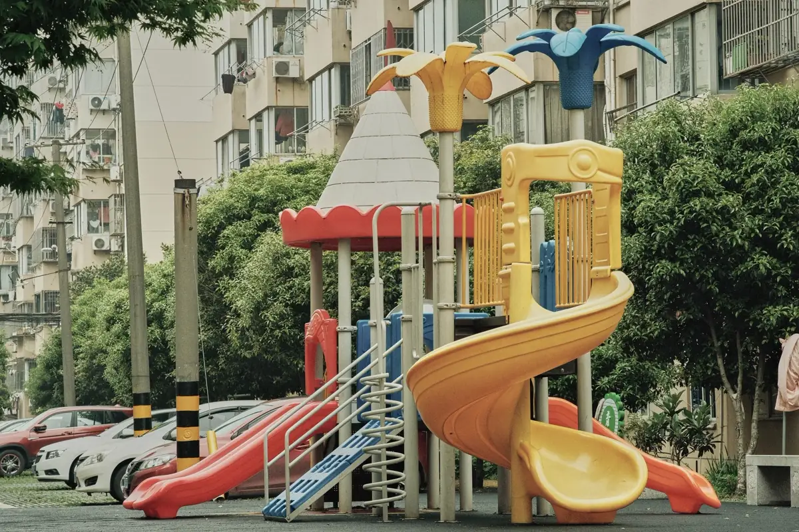
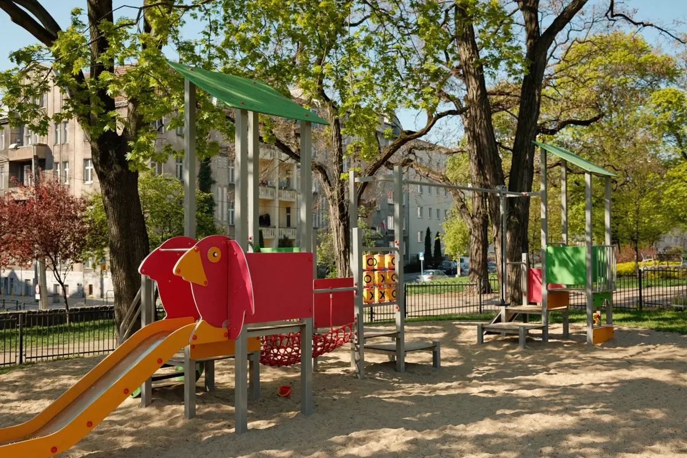

O risco do playground não é o brinquedo quebrado
A imagem de playground inseguro é a de um brinquedo enferrujado e quebrado. Na prática, a maior parte das lesões graves vem de outra coisa: queda de altura sobre piso que não amortece, e obstáculos dentro da área onde a criança cai — banco, mureta, canteiro, raiz, guia de canteiro.
A ABNT NBR 16071 organiza esses cuidados em projeto, instalação, inspeção e manutenção. É a referência que usamos tanto no laudo quanto na execução.
Atendemos condomínios, escolas, creches, clubes, buffets infantis, hotéis, restaurantes e prefeituras em Vitória, Vila Velha, Serra, Cariacica e região.
O que é verificado na inspeção
Área de queda e superfície amortecedora
Medição da área livre ao redor de cada brinquedo conforme a altura de queda, verificação de obstáculos dentro dessa área e avaliação do piso: tipo, espessura, estado, aderência entre placas e desnível. Piso emborrachado desgastado ou descolado deixa de proteger muito antes de parecer ruim.
Estrutura e fixação dos brinquedos
Chumbamento e estabilidade, corrosão de partes metálicas na base — o ponto mais crítico em região litorânea —, apodrecimento de madeira, integridade de correntes, ganchos, mancais, parafusos, tampões de proteção e soldas.
Riscos de aprisionamento e de enroscamento
Vãos que podem prender cabeça, dedo ou pé; aberturas com dimensão perigosa; pontas salientes, parafuso exposto, cabo e corda que podem enroscar em roupa ou cordão. São os itens que menos chamam atenção visualmente e mais causam acidente.
Materiais, acabamento e faixa etária
Farpa em madeira, rebarba em metal, plástico ressecado pelo sol, superfície que superaquece ao meio-dia, e compatibilidade do brinquedo com a faixa etária sinalizada. Brinquedo de criança maior em área de bebê é um risco de projeto, não de uso.
Entorno, acessibilidade e sinalização
Cercamento, portão, distância de piscina e de via de circulação de veículos, sombreamento, drenagem, iluminação, placa com faixa etária e regras de uso, e rota acessível até a área de lazer — item que se conecta ao laudo de acessibilidade NBR 9050.

Execução e adequação
Piso emborrachado
Placas ou piso moldado no local, com espessura escolhida em função da altura de queda do brinquedo mais alto, base regularizada e drenagem — piso amortecedor sobre base que empoça descola e cria degrau. É lavável, acessível para cadeira de rodas e o mais adequado à rotina de condomínio.
Grama sintética
Boa para conforto visual, área de convivência e campo society. Em área de queda de playground, só cumpre função de segurança quando é assentada sobre manta amortecedora dimensionada para a altura de queda. Grama aplicada direto sobre concreto não é piso de segurança, por mais que pareça macia ao pisar.
Instalação de brinquedos e áreas de convivência
Layout com áreas de queda respeitadas, chumbamento conforme o manual do fabricante, montagem, sinalização e entrega com plano de manutenção. Também executamos áreas de convivência, deck, cercamento e sombreamento — serviços que costumam entrar junto de uma reforma de área comum.
Frequência de inspeção
| Nível | Frequência usual | Quem faz |
|---|---|---|
| Inspeção visual de rotina | Semanal a diária, conforme o uso | Equipe do local, com checklist |
| Inspeção funcional | Mensal a trimestral | Manutenção treinada |
| Inspeção técnica principal | Anual | Profissional habilitado, com laudo e ART |
| Inspeção extraordinária | Após acidente, vandalismo ou temporal | Profissional habilitado |
Em condomínio, esse calendário costuma entrar no plano de manutenção predial, junto com elevador, bombas, portão e sistema de incêndio.

Não conformidades mais comuns em condomínio
| Não conformidade | Risco |
|---|---|
| Brinquedo alto sobre piso intertravado ou concreto | Lesão grave em queda — é a falha mais séria e mais frequente |
| Banco, mureta ou canteiro dentro da área de queda | Impacto contra obstáculo rígido |
| Grama sintética sem manta amortecedora | Falsa sensação de segurança |
| Base de brinquedo metálico corroída pela maresia | Tombamento do equipamento em uso |
| Corrente de balanço com elo aberto ou gancho desgastado | Ruptura durante o uso |
| Parafuso saliente e ponta sem tampão | Corte, perfuração e enroscamento de roupa |
| Playground sem cercamento próximo a piscina ou garagem | Afogamento e atropelamento |
| Ausência de registro de inspeção | Responsabilização do síndico e da administradora em acidente |
Perguntas frequentes sobre laudo de playground
Condomínio é obrigado a ter laudo de playground?
A NBR 16071 é a norma técnica de referência para playgrounds e trata de projeto, instalação, inspeção e manutenção. Diversos municípios e o próprio Código Civil, pela responsabilidade do condomínio sobre as áreas comuns, tornam a inspeção periódica uma exigência prática. Independentemente da obrigação formal, o laudo é o que protege síndico e administradora: em acidente com criança, a primeira pergunta é quem inspecionava o brinquedo, com que frequência e com que registro.
O que é área de queda e por que ela é o item mais importante?
Área de queda é o espaço livre ao redor do brinquedo onde a criança pode cair, e que precisa estar desobstruído e revestido com superfície capaz de amortecer o impacto. É o item mais importante porque a maior parte das lesões graves em playground vem de queda de altura sobre piso duro. Brinquedo novo, bonito e certificado instalado sobre piso de concreto ou com banco, mureta e canteiro dentro da área de queda é um playground inseguro.
Qual piso usar embaixo do playground?
O piso precisa ser amortecedor de impacto e a espessura precisa ser compatível com a altura de queda do brinquedo — quanto mais alto, mais espesso. Piso emborrachado em placas ou moldado no local é a solução mais comum em condomínio, por ser lavável, acessível e de manutenção simples. Areia e cavaco de madeira funcionam bem tecnicamente, mas exigem reposição e nivelamento constantes e dificultam a acessibilidade. Grama sintética comum, aplicada sem manta amortecedora por baixo, não é piso de segurança: ela melhora a aparência e praticamente não reduz o impacto.
Com que frequência o playground deve ser inspecionado?
O modelo usual combina três níveis: inspeção visual de rotina, feita pela própria equipe do local em frequência semanal ou até diária conforme o uso, para detectar vandalismo, peça solta e sujeira perigosa; inspeção funcional periódica, mensal a trimestral, verificando desgaste, estabilidade e fixações; e inspeção técnica principal anual, feita por profissional habilitado, com laudo. Playground de uso intenso, à beira-mar ou em área pública pede frequência maior — a maresia acelera a corrosão das partes metálicas.
Vocês também instalam o playground e o piso?
Sim. Fazemos a implantação completa: definição do layout com as áreas de queda respeitadas, preparo e regularização da base, drenagem, execução do piso emborrachado ou de grama sintética com manta amortecedora, chumbamento e montagem dos brinquedos conforme o manual do fabricante, e entrega com plano de manutenção e ART. Também executamos a adequação de playground existente, corrigindo o que o laudo apontou.
Playground na Grande Vitória
Inspeção, laudo e instalação em condomínios, escolas, clubes e áreas públicas:
Precisa do laudo antes da assembleia?
Mande fotos da área e a quantidade de brinquedos. Retornamos com escopo, prazo e valor.